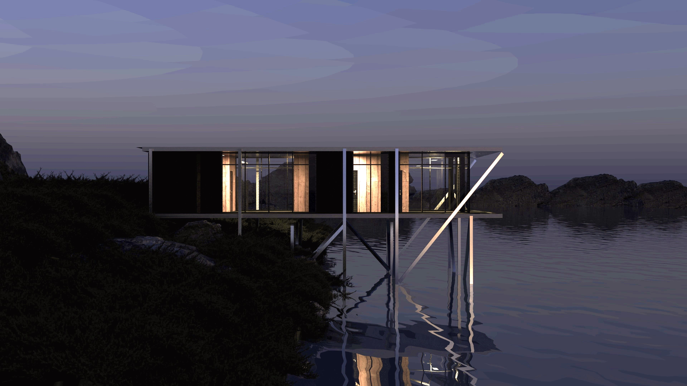
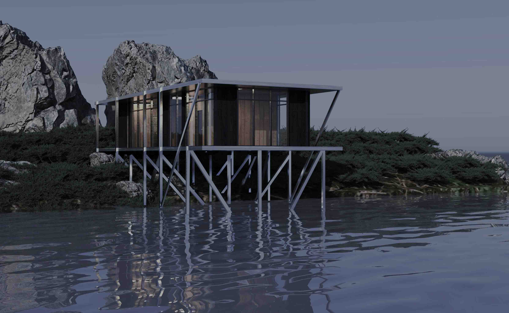
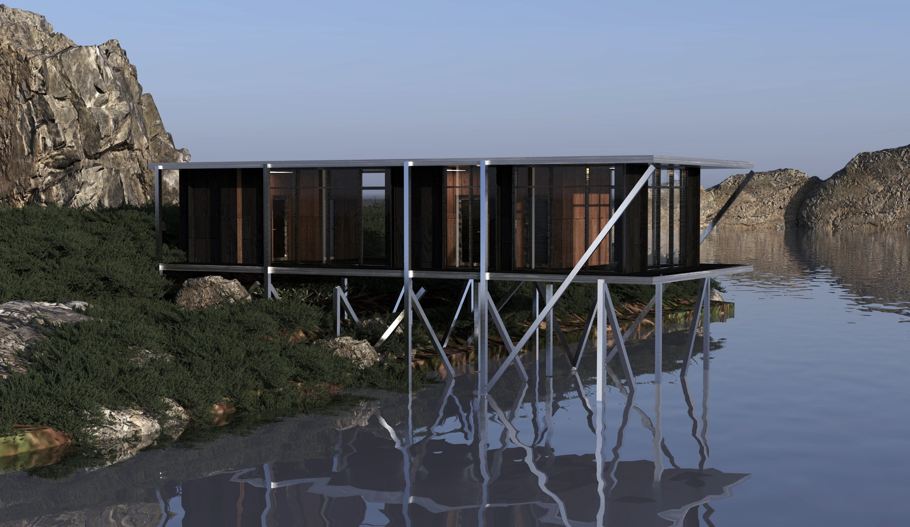
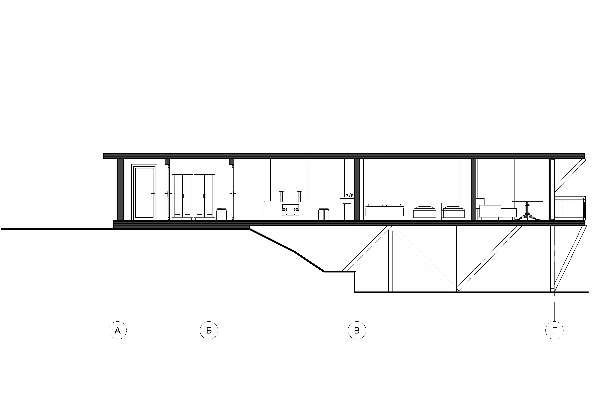
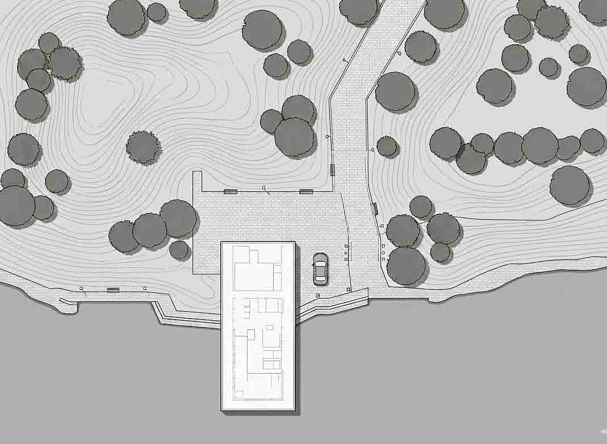

Дом рыбака
Архитектурный облик построен на эффекте полного слияния с природой. Благодаря консольному выносу здания над водой и огромным окнам в пол, из комнат открывается панорамный вид на озеро, а само пространство кажется больше. Строгий ритм фасада, где глухая деревянная отделка чередуется со стеклом, не только скрывает приватные зоны от посторонних глаз, но и делит дом на уютную спальню и открытую гостиную.




01 / КОНЦЕПЦИЯ
Конструктивное решение: стоечно-балочная система на металлических сваях адаптирует здание под крутой уклон берегового рельефа.
Планировочная логика: чередование глухих деревянных панелей и панорамных окон четко разделяет внутреннее пространство на приватную зону спален и открытую общую гостиную.




02 / Генеральный план
Консольная посадка объекта обеспечивает максимальное сохранение ландшафта, открывая прямой выход к воде, что формирует уникальный сценарий взаимодействия архитектуры с природной средой.